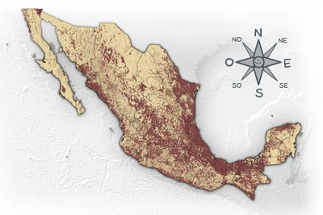
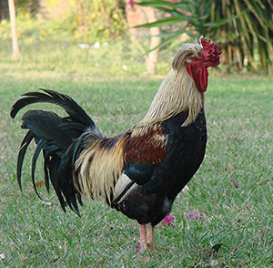
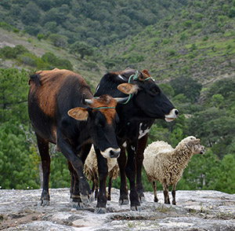
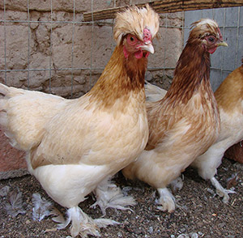
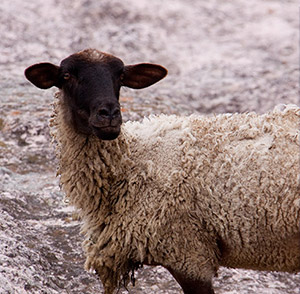
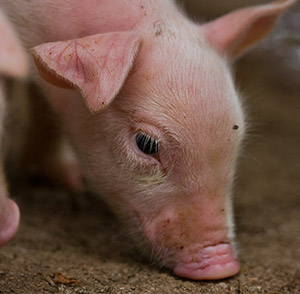
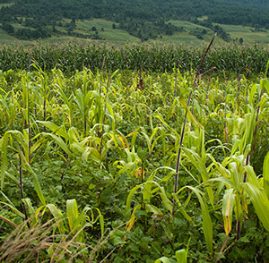

Por todo el país hay campos en donde se producen verduras, frutas, leche de las vacas, carne y lana de los borregos, huevos y carne de las gallinas y muchos otros productos que se transportan a la ciudad para alimentar a sus habitantes.Gran cantidad de frutas y verduras se originaron en México, en el continente americano, como el maíz, la calabaza, el chile, el cacao, y la vainilla. Otras fueron traídas de los otros continentes, como la lechuga, la col, el trigo, el café, el mango y la manzana. El guajolote o pavo se domesticó en México, pero las vacas, borregos, cerdos, cabras y gallinas vienen de Europa y Asia.

Gallo

Soy un ave omnívora, como granos, insectos y algunas lagartijas. Soy originario de Asia. En el campo, además de ayudar a las gallinas en la producción de huevos y pollitos, soy el principal reloj despertador. Kikirikiiii.
Bueyes

Somos mamíferos herbívoros procedentes de Europa. A diferencia de los toros y las vacas, nosotros nos dedicamos al trabajo pesado. Antes que hubiera tractores, ayudábamos a los campesinos a trabajar la tierra para la siembra y en muchos lugares seguimos ayudando.
Gallina

Soy la hembra del gallo. Somos muchos tipos de gallinas y gallos ya que los humanos han seleccionado nuestro tamaño, color y tipo de plumas y hasta nuestro comportamiento. En el campo tenemos que cuidarnos de zorras, tlacuaches y comadrejas, pero nuestro principal depredador son los seres humanos.
Borrego

Soy un mamífero herbívoro muy social. Me gusta vivir con mis familiares. Me trajeron de Europa y Asia. Los seres humanos utilizan mi lana para hacerse ropa, pero también utilizan mi leche, cuero y hasta mi carne, son mis depredadores.
Cerdito

Soy un mamífero omnívoro, es decir, que como de todo, plantas, raíces, insectos, hongos, huevos y hasta basura. Tengo un sentido del olfato muy bueno y puedo distinguir el olor de los hongos enterrados bajo el suelo. Mi principal depredador es el ser humano.
Milpa

En la milpa se cultiva el maíz, calabaza, frijol y se recogen los quelites como las guías de chayote, romeritos, verdolaga, epazote y la chaya. Tan sólo de maíz, existen 61 variedades. Seguramente conoces el maíz reventador de donde se producen las palomitas o el maíz que te comes con limón, sal y chilito. ¿Cuántas otras variedades has probado?